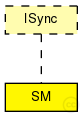

This documentation is released under the Creative Commons license
This documentation is released under the Creative Commons license(no description)
The following diagram shows usage relationships between types. Unresolved types are missing from the diagram. Click here to see the full picture.
The following diagram shows inheritance relationships for this type. Unresolved types are missing from the diagram. Click here to see the full picture.
| Name | Type | Default value | Description |
|---|---|---|---|
| read | bool | false | |
| pseudo_sim | bool | false | |
| precision | int | 80 | |
| hardware_delay | int | 0 |
int hardware_delay=default(100); |
| clock_corr_delay | int | (2*precision)+1 |
typically set to the number of faulty synchronization masters to be tolerated |
| max_transmission_delay | int | 635 | |
| max_integration_cycles | int | 10000 | |
| max_pcf_membership | int | 3 | |
| syncDomain | int | 2 | |
| syncPriority | int | 4 | |
| MembershipAcceptanceRange | int | 0 | |
| bit_index | int | 0 |
index of the bit that represent this SM in the "pcf_membership_new" |
| id | int | 0 |
@display("i=block/timer"); |
| compression_master_delay | int | 246 | |
| frame_length | int | 64 | |
| sm_coldstart_timeout | int | 12500 | |
| cs_offset | int | (2*max_transmission_delay)+compression_master_delay+frame_length | |
| ca_offset | int | 6000 |
This parameter defines the duration that a synchronization master waits after a CA frame becomes permanent before it dispatches the first IN frame. |
| sm_restart_timeout_async | int | 12500 | |
| sm_restart_timeout | int | 12500 | |
| sm_restart_timeout_sync | int | 12500 | |
| sm_listen_timeout | int | 25000 | |
| smc_scheduled_receive_pit | int | 630 |
PoInT |
| smc_sync_eval_pit | int | smc_scheduled_receive_pit+precision | |
| smc_async_eval_pit | int | 0 | |
| ca_acceptance_window | int | 2*precision | |
| sm_dispatch_pit | int | 0 | |
| smc_clock_corr_pit | int | smc_scheduled_receive_pit+2*precision+1 | |
| sm_scheduled_rcv_pit | int | smc_scheduled_receive_pit | |
| sm_scheduled_receive_pit | int | smc_scheduled_receive_pit | |
| sm_wait_threshold_unsync | int | 3 | |
| sm_tentative_sync_threshold_async | int | 3 | |
| sm_tentative_sync_threshold_sync | int | 3 | |
| sm_tentative_to_sync_thrld | int | 3 | |
| sm_integrate_to_wait_thrld | int | 3 | |
| sm_integrate_to_sync_thrld | int | 3 | |
| sm_stable_threshold_async | int | 3 | |
| sm_stable_threshold_sync | int | 3 | |
| sm_unsync_to_sync_thrld | int | 3 | |
| sm_unsync_to_tentative_thrld | int | 3 | |
| sm_sync_threshold_async | int | 3 | |
| sm_sync_threshold_sync | int | 3 | |
| acceptance_window | int | 2*precision | |
| int_cycle_duration | int | 12500 | |
| num_stable_cycles | int | 1 | |
| cv_local_integration_cycle | int | 0 | |
| num_unstable_cycles | int | 1 | |
| drift_error | int | precision | |
| ca_round_trip | int | 2*max_transmission_delay+compression_master_delay+hardware_delay+precision | |
| sm_tent_to_stable_enabled | bool | true | |
| Standart_Integrity_Synchronisation | bool | true | |
| High_Integrity_Synchronisation | bool | false | |
| sm_sync_to_stable_enabled | bool | true | |
| stable_ca_enabled | bool | true |
just for test int pcf_membership_new=22; int pcf_integration_cycle=0; |
| Name | Value | Description |
|---|---|---|
| class | SM | |
| display | i=block/timer |
| Name | Direction | Size | Description |
|---|---|---|---|
| RCin | input |
Input for rate-constrained traffic |
|
| TTin | input |
Input for time-triggered traffic, not used, required by interface `IPort' |
|
| schedulerIn | input |
Input for scheduler messages |
simple SM like ISync { parameters: //SCState is implemented by the SCState C++ Class @class(SM); @display("i=block/timer"); bool read = default(false); bool pseudo_sim = default(false); int precision = default(80); //int hardware_delay=default(100); int hardware_delay = default(0); int clock_corr_delay = (2*precision)+1; //typically set to the number of faulty synchronization masters to be tolerated int max_transmission_delay = default(635); int max_integration_cycles = default(10000); // int max_pcf_membership = default(3); int syncDomain = default(2); int syncPriority = default(4); int MembershipAcceptanceRange = default(0); //index of the bit that represent this SM in the "pcf_membership_new" int bit_index = default(0); int id = default(0); // @display("i=block/timer"); int compression_master_delay = default(246); int frame_length = default(64); int sm_coldstart_timeout = default(12500); int cs_offset = (2*max_transmission_delay)+compression_master_delay+frame_length; //This parameter defines the duration that a synchronization master waits after a CA frame becomes //permanent before it dispatches the first IN frame. int ca_offset = default(6000); int sm_restart_timeout_async = default(12500); int sm_restart_timeout = default(12500); int sm_restart_timeout_sync = default(12500); int sm_listen_timeout = default(25000); //PoInT int smc_scheduled_receive_pit = default(630); int smc_sync_eval_pit = smc_scheduled_receive_pit+precision; int smc_async_eval_pit = default(0); int ca_acceptance_window = 2*precision; int sm_dispatch_pit = default(0); int smc_clock_corr_pit = smc_scheduled_receive_pit+2*precision+1; int sm_scheduled_rcv_pit = smc_scheduled_receive_pit; int sm_scheduled_receive_pit = smc_scheduled_receive_pit; int sm_wait_threshold_unsync = default(3); int sm_tentative_sync_threshold_async = default(3); int sm_tentative_sync_threshold_sync = default(3); int sm_tentative_to_sync_thrld = default(3); int sm_integrate_to_wait_thrld = default(3); int sm_integrate_to_sync_thrld = default(3); int sm_stable_threshold_async = default(3); int sm_stable_threshold_sync = default(3); int sm_unsync_to_sync_thrld = default(3); int sm_unsync_to_tentative_thrld = default(3); int sm_sync_threshold_async = default(3); int sm_sync_threshold_sync = default(3); int acceptance_window = 2*precision; int int_cycle_duration = default(12500); int num_stable_cycles = default(1); int cv_local_integration_cycle = default(0); int num_unstable_cycles = default(1); int drift_error = precision; int ca_round_trip = 2*max_transmission_delay+compression_master_delay+hardware_delay+precision; bool sm_tent_to_stable_enabled = default(true); bool Standart_Integrity_Synchronisation = default(true); bool High_Integrity_Synchronisation = default(false); bool sm_sync_to_stable_enabled = default(true); bool stable_ca_enabled = default(true); //just for test //int pcf_membership_new=22; //int pcf_integration_cycle=0; gates: //Input for rate-constrained traffic input RCin @directIn @labels(CTFrame); //Input for time-triggered traffic, not used, required by interface `ttethernet.linklayer.IPort' input TTin @directIn @labels(CTFrame); //Input for scheduler messages input schedulerIn @directIn; }
This documentation is released under the Creative Commons license